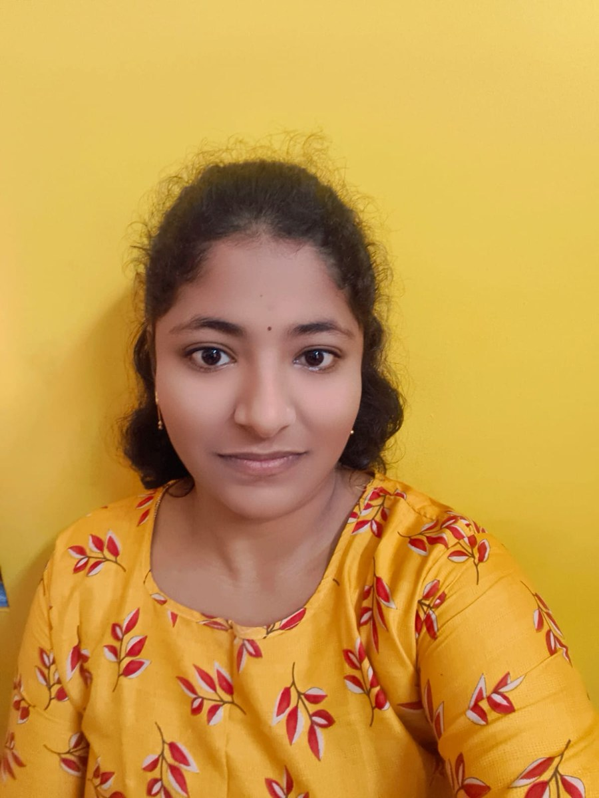

01
Cloud & AWS
EC2, ECS, ECR, EKS, S3, RDS, Lambda, DynamoDB, EBS, EFS, IAM, ALB, Auto Scaling, CloudWatch
I'm Rallapadi Vennela — a DevOps Engineer and Python Backend Developer focused on cloud infrastructure, CI/CD automation, and dependable applications.

Years of experience*
Build, test & deploy
Cloud infrastructure
Backend & automation
I connect development and operations to help teams ship software confidently—from infrastructure provisioning to production monitoring.
Design and maintain CI/CD pipelines, containerize services, provision AWS infrastructure with Terraform, and support production systems with monitoring and root-cause analysis.
With automation, clear documentation, secure access practices, and close collaboration with developers and QA in Agile/Scrum teams.
Hands-on experience across AWS and DevOps, supported by Python, Django REST APIs, SQL databases, Redis, and Celery.
*Experience dates and details are presented as provided in the attached resume.
A practical toolkit for cloud infrastructure, release automation, backend development, and operational reliability.
EC2, ECS, ECR, EKS, S3, RDS, Lambda, DynamoDB, EBS, EFS, IAM, ALB, Auto Scaling, CloudWatch
Jenkins, GitHub, automated build/test/deploy pipelines, Git branching, pull requests, code reviews
Docker, Kubernetes, Amazon ECS, ECR image management, Terraform for compute, networking, storage, database, and IAM
Python, Django, Django REST Framework, FastAPI, REST APIs, SQL, JWT authentication, role-based authorization
PostgreSQL, MySQL, Amazon RDS, Redis, Celery, Django ORM, query optimization and indexing
CloudWatch logs and metrics, health checks, Linux troubleshooting, root-cause analysis, IAM and secure credentials
Hands-on work across DevOps engineering and Python backend development at SSL Infotech Private Limited.
SSL Infotech Private Limited
A cloud-hosted platform combining customer relationship management, learning workflows, and AI-powered automation.
A platform integrating GoHighLevel CRM, a Learning Management System, and AI-powered automation for lead management, customer engagement, course delivery, and student support.
Himaja Degree College, Puttur
2018 — 2021I'm open to connecting about DevOps, cloud infrastructure, CI/CD, and Python backend engineering opportunities.